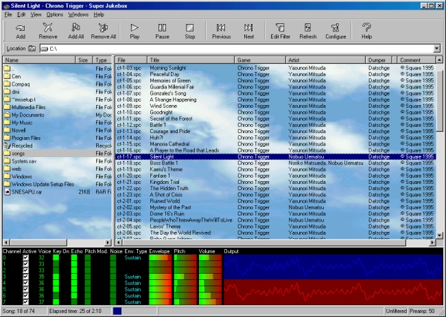

Welcome to the final version of Super Jukebox. It's now a complete solution for (hopefully) all your needs. Check out the Highlights list for some of the main attractions.
Well, I think we can all pretty much agree that the Super Nintendo had some of the best music ever found in video games. Who could
possibly not be moved by the music in the Final Fantasy games? And it's no wonder that you can find entire soundtracks of most SNES
games on the Internet. I love listening to SNES songs, but the programs that I have for doing that are somewhat unintuitive, as such
I decided to make my own solution. In this archive I have included three products, one is the base product, a DLL (Uematsu.DLL) for
playing SPC files, another is an MCI (Media Control Interface) driver for Media Player, and the other, the main product, is the Super
Jukebox. Although the installation program modifies the registry to automatically play SPC songs using Media Player, I think you will
find Super Jukebox to be much better.
Uematsu.DLL plays SPC files, for those who don't know what SPC files are, they are direct
copies of the songs contained inside SNES cartridges. As such, they sound almost 100% identical as a real SNES. They are also quite
small, with every song taking up exactly 66,048 bytes, regardless of the length of the song. One interesting fact about SPCs is that without the use of an ID666 tag, they don't specify the length of the song, as such the song simply repeats over and over. A well written description of how sound on the SNES works can be found at the SNESamp homepage.
I am most appreciative of the people who
took the time to not only try out the program, but to also send me feedback, especially Anti Resonance for creating the great SPC700/DSP core used by Uematsu.DLL and Datschge for designing the toolbar icons and always sending me new and helpful suggestions, my gratitude in multitude. I would also like to thank
Zophar for graciously hosting my program on his great site, thank you.

Highlights:
- Installation and uninstallation programs.
- Intuitive, easy, standardized interface.
- Full Help support.
- Supports up to 32-bit/96kHz/Surround sound.
- Allows saving sound output to WAV files.
- Super fast, tight and accurate visualization engine.
- Support for additional visualization plugins through Active Wallpaper interface.
- Playlist oriented.
- Export playlist to HTML files.
- Playlists can be rewinded, shuffled and randomized.
- Ability to detect when a song has stopped playing and proceed automatically.
- Search engine for the playlist.
- Playlist filter feature with powerfull commands and history lists.
- Full support for ID666 tags, including extended revision.
- Playlists can be sorted by individual ID666 fields.
- Support for "skins", which can be stretched or tiled and alpha-blended.
- Can extract SPC files from ZIP archives. ZIP offers fast decompression.
- Can extract SPC files from RAR archives. RAR offers *great* compression for SPCs.
- Can extract SPC files from ACE archives.
- Drag-and-drop folders and files support.
- Extensive configurability.
- Full support for keyboard shortcuts.
- Total of three SPC700 engines, Uematsu (in Super Jukebox), Snes9X and ZSNES (in MCI driver).
- Can switch between Snes9X and ZSNES SPC700 engines in the MCI driver.
- DLL (Uematsu.DLL) for any and all programs to use. Header and import library provided.
- MCI driver (MCISPC.DRV) for any and all programs to use (Media Player).
Downloads:
This is the new pure Win32 version:
This is the old MFC version:
Try out some of my other programs:
FrontRunner - A universal front-end for emulators, available both for DOS and Windows.
Note: The source codes come with a license agreement and are not public domain, read the file LICENSE.TXT inside the archives.
Links:
- Zophar's Domain SPC Archive
This is probably the largest SPC archive on the Internet.
- SNESmusic
This is the homepage of SNESmusic, which also has a high quality SPC archive making full use of ID666 tags maintained by Datschge.
- Alpha-II Productions
This is the homepage of Anti Resonance, the guy who created SNESAPU.DLL, the SPC700 engine that's currently being used in Super Jukebox.
- Challenge Games
This is a group that modifies existing ROM games, such as Super Mario Bros. 3, to make them more challenging.
Contact:
I am always interested in hearing from people, if you have any suggestions, comments or questions, then please feel free to write me
and let me know what's on your mind: costel_fodor@yahoo.com. By the way, tell me
what's the most special thing on this web page, if you're correct I will mention you on it.
The following people have correctly guessed the trivia:
- RingoBell
- Tom Hatfield
- CW Treez
History:
v3.3 (January 16, 2005)
- Added a new version of UNRAR.DLL, v3.14, for support for .RSN files.
v3.2 (January 5, 2005)
- Added a new version of SNESAPU.DLL, v2.1, that fixes some of the hang-ups in Windows XP.
v3.1 (February 26, 2001)
- During the last release (version 3.0) I lost about two weeks worth of work in my source code, since then I have been re-doing that work over again, additionally I have also fixed some bugs from the last version and have even added some new features.
- This version is what version 3.0 was supposed to be (hopefully).
v3.0 (December 20, 2000)
- Rewrote the entire program from scratch, the end.
- Here then, I withdraw my hands from the keyboard.
v2.9 (September 2, 2000)
- Fixed a bug that prevented Super Jukebox from reading ID666 tags from SPC files that were located in the root directory of a drive.
- Fixed a bug that made the timer message handler stall every once in a while thereby making the status bar update stall as well.
- Added a new visualization gauge for the pitch rate parameter of the SPC700/DSP channels. This basically indicates what musical note is playing, but rather graphically.
- Changed the status bar layout to display some additional information, such as a graphical progress bar for the currently playing song and descriptions for the menu items.
- Added the ability to switch between buttons with text labels and buttons with pictures. Special thanks to Datschge for designing these bitmaps.
- Added an option to limit the size of the frequency spectrum for the Spectrometer using a percentage representative of the current sample rate for the player.
- Made it so that the program settings are saved to the registry every time you close the Configuration dialog box by clicking on OK.
- Added the ability to hide the window controls, so you can see more of your precious skins.
- Made it possible to seek to a specific position in the song by moving the mouse over the status time bar and clicking on it, this works both when the song is playing or not. Note, however, that some songs may sound somewhat screwy after you seek in it, but this is a matter of the emulation and is most likely not even a bug. Also note, that due to an apparent bug with Windows (caused by capturing the mouse input), if you have the mouse cursor on the status time bar that the accelerator shortcuts will not work, so just move the mouse off of the status time bar.
- Added the ability for the installation program to detect which directory the previous installation was installed to and use that as the default choice, of course this won?t work the first time you run it since the last version never saved that information.
- Added a new "Edit With Notepad" entry to the Explorer context menu for PL files, since they are just plain text files.
v2.8 (August 26, 2000)
- Fixed a nasty little memory leak in the visualization routine that caused Windows resources to be depleted rather quickly and then crashing Windows. I am truly sorry for all the people who were affected by this, but the last version I released in a rush.
- Added an option to the Configuration dialog box to remove the title bar from the main window.
- Changed the code to update the visualization in a separate thread instead of from the timer message handler.
- Added a frequency spectrum analyzer as an alternative to the visualization. Special thanks to Murphy McCauley for his Fast Fourier Transform DLL.
- Added the ability to adjust the update rate for the visualization.
- Added the ability to adjust the priority for the visualization thread.
- Added context sensitive help to the playlist and song properties dialog boxes.
- Changed the oscilloscope renderer so that the wave is now being scaled to fit the window, instead of the window being scaled to fit the wave. This gives it a cleaner look.
- Updated the documentation for SNESAmp.DLL from text to HTML.
v2.7 (August 10, 2000)
- And now, ladies and gentlemen, the moment you?ve all been waiting for, without further adue, I give you, VISUALIZATION! Special thanks to none other than Anti Resonance for helping to get this stuff on.
- Removed the shity support I had for archives containing sub-directories, it?s just too damn tricky, so now when you open an archive with sub-directories it will list all the files in it at once without any differentiation of their location within the archive.
- Added and removed some functions from the SNESAmp DLL, read the documentation for all the details.
- Now rounding up the song lengths specified in ID666 tags, instead of just discarding the fractional second.
- Added a brand new menu.
- Removed all but the navigation and player buttons from the main window.
- Moved all the buttons that I removed from the main window into menus.
- Added 4 preset layout schemes for the window controls, and a ?Manual? selection for freehand adjustment.
- Added a dialog box to allow you to go directly to a specific song by specifying it?s number.
- Cleaned up some of the GUI functionality some more.
- Well, and a really lot more, you?ll figure it out!
v2.6 (July 24, 2000)
- Made the program window redraw flicker less when you adjust the list views or buttons by not erasing over the children controls.
- Fixed a slight problem when you tried to open a playlist that does not specify a skin file and the program tried to load one anyway, thereby trying to load a file with no name.
- Finally took the time to see if I could adapt the SNESAmp source code into a fully integrated, stand alone DLL, and am glad to say that I have. This has given me much better control/access over the emulation.
- I have now written my own sound output streamer so OUT_WAVE.DLL from WinAMP is not required anymore, hooray!
- I am now releasing a new SPC playing DLL that is based on SNESAmp, with some really nice features, much better than SPC700EMU.DLL which I am still keeping around for the MCI driver.
- Removed the ?Detect Silence? option and replaced it with ?Detect Inactivity?, this is much better because it checks to see if there is anymore activity inside the SPC700/DSP chip which is much more reliable than checking to see what the current loudness is.
- Changed the title bar order to display the currently playing song first, the playlist name second and the program name last. :-( I suppose this is more ideal considering how small the taskbar buttons are.
- Made clicking the ?Next? button select a random song if the ?Randomize? option is selected in the Playlist settings. This one is especially for Datschge, the guy can be quite persistent. :-)
v2.5 (July 11, 2000)
- Changed all the time formats used in the program and the playlists from plain seconds to d:h:m:s, where d is days, h is hours, m is minutes and s is seconds. Note that only the smallest field greater than 0 and all fields beneath it are listed.
- Now displaying the name of the currently playing song in the program title bar.
- Fixed a slight problem where whenever a song started to play the wave out volume was being reset to the value it was at when Super Jukebox was started.
- Made it possible to move and resize the list views and the buttons interactively, place the mouse cursor at the top or left edge of one of the list views or the buttons until you see the double pointed resizing cursor and then drag the mouse to move them, or place the mouse cursor at the bottom or right edges to resize them.
- Added an option to allow Super Jukebox to automatically load the last opened playlist and start playing the first song.
- Changed the minimum allowed length from -1 to 0, now 0 means infinite, I suppose that makes more sense than -1.
- Added an option to allow Super Jukebox to automatically adjust the size of the playlist columns to fit the widest text string in that column, this is actually a very useful feature.
- Now opening playlist files in binary mode instead of text, some playlist files out there only have a linefeed at the end of a line and no carriage-return, which confused Super Jukebox, now it?s fixed.
- Made the uninstall program able to run on systems with Shell32.dll files of version less than 4.71.
- As always several other various cleanups.
v2.4 (June 19, 2000)
- Made the installation program and the Super Jukebox itself more adaptable to run on Windows 95 and with a Shell32.dll file of version less than 4.71, if you were one of the people that wrote to me about not being able to install and/or run Super Jukebox on your computer and this version works, then please write me to let me know that. Thank you.
v2.3 (June 15, 2000)
- Changed the playlist format to include the full name of an SPC file along with it's displayed name, incase the displayed name does not specify the extension.
- Fixed a slight problem where the playlist context menu was appearing way off to the left when the list view was scrolled far off to the right while using the Applications key.
- Added a new button called 'Refresh', click it to refresh the program.
- Added a small up and down arrow to the list view column headers that tell you which column and in which order the list is sorted.
- Added a new button called ?Help?, and with it added an entire Help system, I therefore have gotten rid of the ReadMe.txt file, hooray!
- Added context sensitive popup Help to the installation program for the various dialog box controls on it.
v2.2 (June 2, 2000)
- So many changes in this version I hardly know where to start...
- Fixed the problem that some people have been reporting of Super Jukebox not being able to play their SPC files or openning their archives. This was because their "Hide file extensions for known file types" setting in the "Start->Settings->Folder Options->View" applet was turned on, which made Super Jukebox display the names of files without their extensions, therefore making it impossible to properly process the files. Now Super Jukebox knows what the current setting is and can accommodate properly.
- Added support for ID666 tagged files. Note that no modifications to SPC files is supported, instead you can save them in playlists.
- Added a new button called 'New', click it to begin a new playlist.
- Added a lot more columns to the playlist view for the different ID666 fields.
- Added the ability to sort the playlist by clicking on the various column headers, they toggle between ascending and descending order.
- Added support for the special Applications key on Win95 keyboards to bring up the context menu for the playlist entries.
- Revamped the configuration dialog box extensively, read the documentation for the different options.
- Added a new button called 'Find...', click it to bring up the Find dialog box. Read the documentation for its usage.
- Fixed a slight problem with the skin support.
- Included the new SNESAmp v1.2 player.
- Basically a ton of new features and improvements, I hope you like them.
v2.1 (April 15, 2000)
- Removed the Snes9X and ZSNES engines from Super Jukebox, and replaced them with Anti Resonance's much better engine. Note, however, that the MCI driver remains unchanged.
- Changed the configuration dialog box to accommodate the new SPC700 engine.
- Now listing files with extensions SP0 through SP9, and the old SPC.
- Made the Super Jukebox window sizeable. The size and position are saved and restored everytime you run Super Jukebox.
- Some more clean ups and fixes.
v2.0 (November 23, 1999)
- Added the options to have the installation program create a shortcut to Super Jukebox on the Desktop and to create a program group in the Start Menu.
- Now you can browse archives containing sub-directories as if they were ordinary directories. Again, I should have done this a long time ago, but it DID require quite a few changes.
- I had hoped version 2.0 to be a bit more spectacular, but then I never even thought I'd get to version 2.0, anyway it should be pretty much finished now. :-) Thanks for hanging in there.
v1.9 (November 17, 1999)
- Now displaying the names and icons for files, folders and drives as assigned by the shell, my apologies for not doing this in the first place, I guess I must be sloppy. :-( But after all, Super Jukebox is only my second Windows program.
v1.8 (November 16, 1999)
- Fixed up a few minor bugs, and cleaned up the source code some more.
- Made the handling of playlists more portable. When looking for the skin and the SPC files, it first looks in the directory specified in the playlist, then in the same directory as the playlist and last, in the same directory as the program.
- Added a 'Statistics...' command to the playlist context menu, which is nothing more than a shortcut for the 'About...' button. :-)
v1.7 (November 9, 1999)
- Due to request, I have finally added support for...tada..."skins"! Let me know what you think.
v1.6 (November 8, 1999)
- Made the installation program more flexible as to what it does.
- Added support to the MCI driver for the ZSNES WinAMP plugin. You can specify which engine you want to use by selecting 'Properties' on the 'Device' menu in Media Player.
- Added support for archives that contain SPCs within sub-directories.
- Now extracting SPCs from archives to temporary filenames, so there's no chance of file conflicts.
- The hilite bar in the left pane behaves a little more intelligently, such as automatically positioning itself on the parent direcotry when you switch into a direcotry and repositioning itself to the current directory once you go back out to its parent.
- Added icons to the list views. Note, however, that these aren't the actual icons as assigned by the shell, but rather are hardcoded into the program. If anybody can tell me how to obtain the actual icons for files and directories as assigned by the shell I'd be very grateful.
- Added a context menu for the playlist entries, click on a playlist entry with the right mouse button to bring it up.
- Now that new additions are starting to come to an end and things are working well, I've taken the time to clean up the source code considerably. I would really like to thank all the people who took the time to write me, because of you I've been able to make this program much better than I ever could have on my own.
v1.5 (November 4, 1999)
- Made the installation program a little more robust, checks for more errors.
- Removed dependency on DCOM in the installation program, should help people with Windows 95 and no Internet Explorer. Let me know how this works, in particular the 'Browse...' button.
- Added some specific support for systems that have more than one mixer driver.
- Now it only reminds you that a playlist needs to be saved when it actually contains some songs.
- Some archives contain SPCs with the read-only attribute set, this made it impossible for Super Jukebox to delete them after extracting them, so now after extracting a file it sets its attributes to normal so it can delete it.
v1.4 (October 29, 1999)
- Added an Uninstall.exe program for removing Super Jukebox, now the only file you will have to remove manually is Uninstall.exe. Before this was done with Super Jukebox.exe, but that left Super Jukebox.exe and all related DLL files undeleted.
- Added the ability to detect when a song has ended, and then proceed automatically. I have tested this on 8 songs, but let me know how it works. OK, la-li?
- Now extracting SPCs from archives into the TEMP directory instead of the current directory, useful if you have your archives on CD-ROMs.
- Now saving the current directory in the registry upon exit, and restores it upon startup.
v1.3 (October 26, 1999)
- Added the ability to play songs randomly, for a little more excitement.
- Added some statistical information for the playlist in the 'About...' dialog box.
- Now displaying the drive labels in the left pane.
- Fixed a minor issue with the MCI driver.
v1.2 (October 25, 1999)
- Added the ability to fade-out a song before advancing to the next one.
- Added a StopSPC function to SPC700EMU.DLL, before this was done with PauseSPC and RestoreSPC.
v1.1 (October 20, 1999)
- Due to request, I have added support for ACE archives.
- Added support for the ZSNES WinAMP plugin. This is totally unofficial, I hope nobody minds. :-) This is helpful because the Snes9X engine doesn't play songs from a few games, such as Lagoon.
v1.0 (October 5, 1999)
 © Costel Marius Fodor, 1999-2005
© Costel Marius Fodor, 1999-2005
|